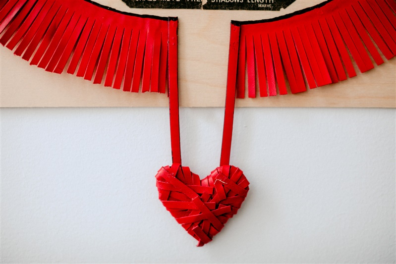

One
Two
Three
Harper's Bazaar 1865 edition, acrylic, found objects deconstructed and re-sculpted.
This piece was created out of gifted accessories (earrings, purse) that
evoked for me different eras of military garb and decoration. Collaged newspaper images
all sourced from articles on the assassination of Abraham Lincoln in Harper's Bazaar
1865 magazine.
16in. x 20in.